第一部分｜一致性从哪来
01｜一致性的分类
跨镜头不变，才叫一致性。
- 角色一致：同一个人或物，跨镜头、跨动作外观不变。翻车的样子是转身后服装变了、动作一大就变形。靠一组角色参考图保持：形象、三视图、动作、道具。
- 场景一致：同一空间，位置关系与材质连贯。翻车的样子是物品消失、空间错位。靠一组空间参考图保持：正视图、俯视图、九宫格分镜。
- 风格一致：画风、光线、色调统一。翻车的样子是镜头之间质感跳变，像拼贴。靠统一的风格描述，加上同一套参考图自带的画风。
重点是角色和场景两层。风格会跟着参考图一起稳定下来，不用单独处理。
02｜生成入口
多镜头创作走全能参考，首尾帧模式留给单镜头。
我们进入即梦官网，选择 Seedance 2.0 来生成 AI 视频，可选择的生成模式主要分两种：首尾帧和全能参考，它们各有适合的任务。
两个入口的分工：
- 首尾帧模式：输入是一张首帧或尾帧图，配一段文字。适合刚上手、只拍一个镜头、对首尾构图有明确要求的情况。
- 全能参考模式：图片、视频、音频、文字可以混着传。适合需要跨多个镜头保持角色和场景一致的创作。
本文的赛博悟空和 Ye café 两个案例，都用全能参考模式完成。
即梦Seedance2.0全能参考入口
03｜一致性的四类素材
画面稳不稳，取决于你锁住了几样。
全能参考模式能同时收四类素材，它们各自守一样东西：
- 文字 · 锁意图：谁在做什么，剧情与镜头怎么走。
- 图片 · 锁外观：角色形象、场景、道具长什么样。
- 视频 · 锁运动：动作、运镜、镜头节奏。
- 音频 · 锁节奏：配乐、语音、卡点。
04｜三步调度素材
素材一多，关键动作就变成了给每个素材指派用途。
- 上传素材：把图片、视频、音频和文字一起传进去。
- @素材名 指定用途：逐一点名，说清每个素材在这次生成里负责什么。
- 写提示词，生成：写清镜头和动作，一次生成。
一次最多 9 张图片、3 段视频、3 段音频，合计不超过 12 个文件。
数量有限，优先喂对一致性影响最大的素材。
05｜投喂取代描述
一致性不是描述出来的，是投喂出来的。
形容词要靠模型每次重新理解一遍。同一句「赤褐色毛发」，换个镜头可能得到不同深浅，而写出来的词再准，也只是对画面的转述。
所以更稳的做法是用投喂取代描述：把参考图直接交给模型，图里是什么样，生成的镜头就该是什么样，不同镜头因此都对齐同一张图。
第二部分｜锁住角色：赛博悟空案例
01｜备齐参考图
开拍之前，把角色做成一组分工明确的参考图。
| 参考图类型 | 保持什么 | 例子 |
|---|---|---|
| 形象图 | 角色整体外观、服化道 | 角色定妆正面像 |
| 三视图 | 正面、侧面、背面的一致外观 | 角色三视图 |
| 动作图 | 特定姿态与动作 | 蹲姿、扛棍行走 |
| 道具图 | 关键道具的最终形态 | 武器 A、武器 B 的定型图 |
| 场景图 | 角色所处的环境 | 大厅、最终城市 |
这组图层层派生，每一张都基于同一张角色图长出来。
02｜赛博悟空案例
案例总览
一个角色定妆照，派生出一条片子要的所有画面。
- 成片：一条 15 秒的 3A 游戏预告片，片名《大慈大悲加特林机关枪》。
- 形式：一镜到底，无剪辑。
- 叙事：从纯白 UI 影棚，走进雨夜赛博巨城。
- 风格：「西游记战将 × 高科技机甲」超写实 CGI。
制作分四步，一步比一步具体：先定角色，派生动作与道具，合成界面与场景，最后生成视频。
成片：《大慈大悲加特林机关枪》
先定角色
角色长什么样，在第一步就定死。
先生成角色形象图和三视图。赤褐色毛发、黑金机甲鳞片护甲、金色头冠与两根雉鸡翎，全部在这一步定下来。
之后的每一张图、每一个镜头，都对齐这张脸。
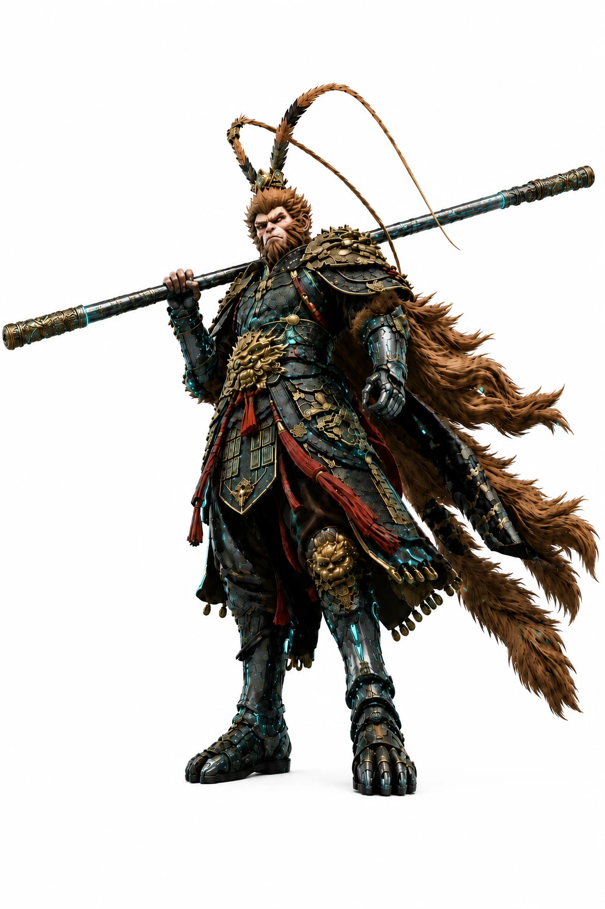
赛博悟空角色形象图
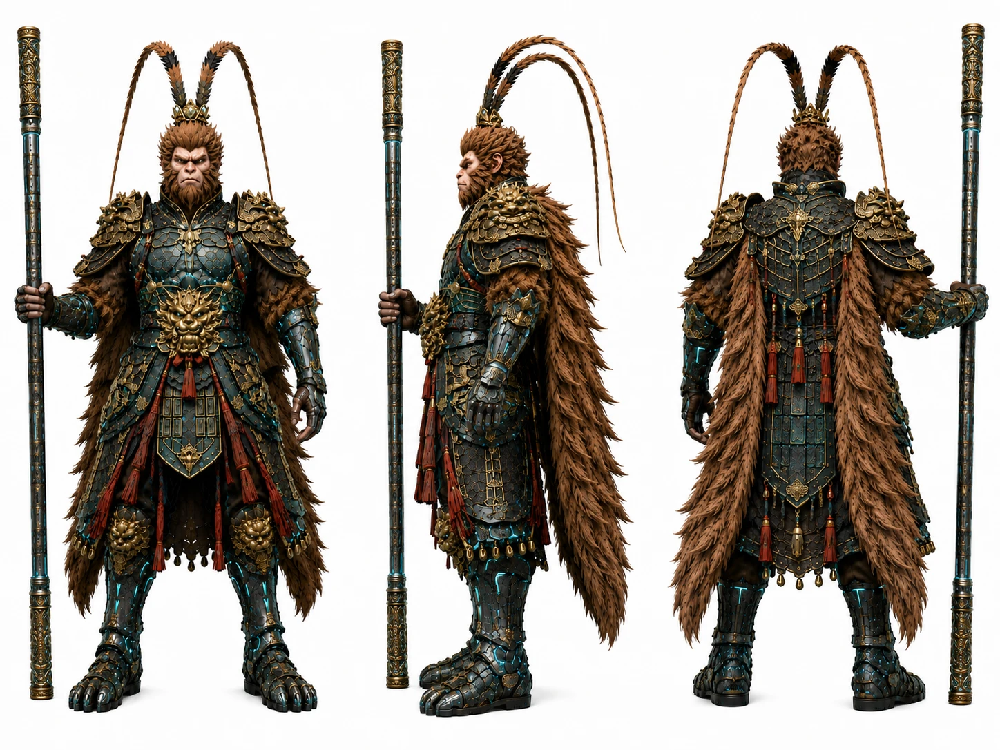
赛博悟空角色三视图
派生动作与道具
姿态和道具都从同一个角色长出来。
用第一步的两张图，生成蹲姿、扛棍行走，以及两件武器的定型图。
姿态和道具都不另起炉灶。
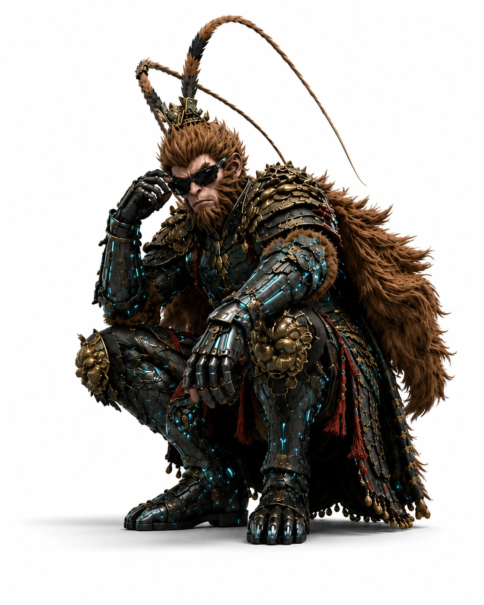
赛博悟空动作图蹲姿
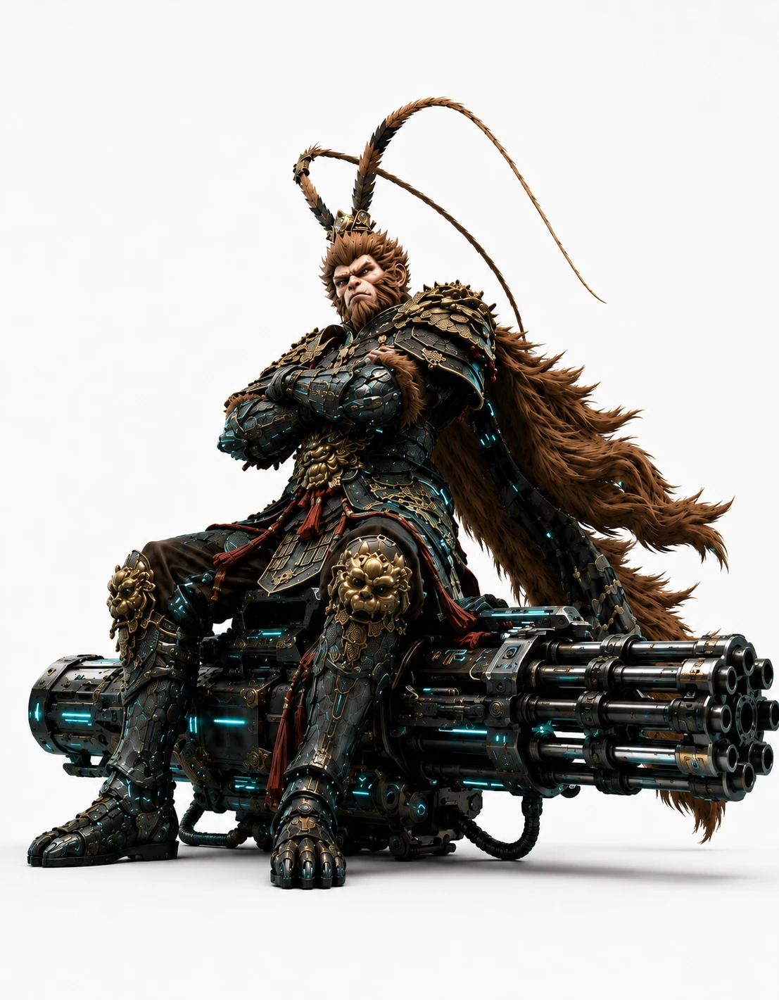
赛博悟空道具图重型加特林
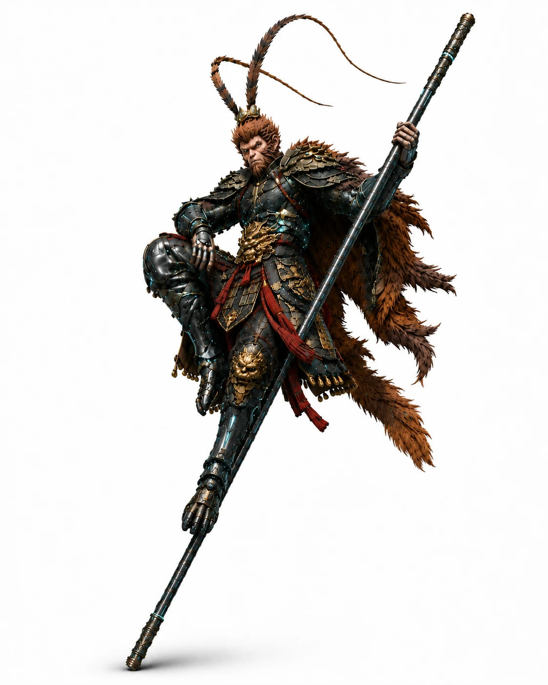
赛博悟空道具图如意金箍棒
合成界面与场景
每个镜头要的画面，提前备齐。
把角色放进游戏画面，生成四张界面与场景分镜图：开场菜单、武器面板、加载界面、最终城市。
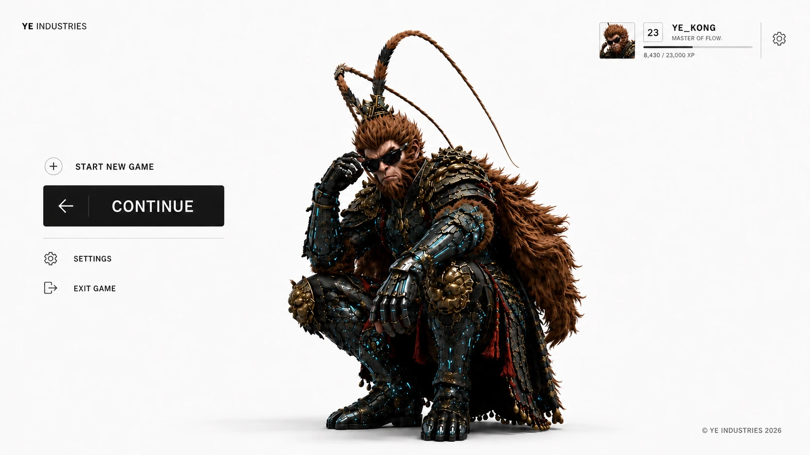
赛博悟空开场菜单
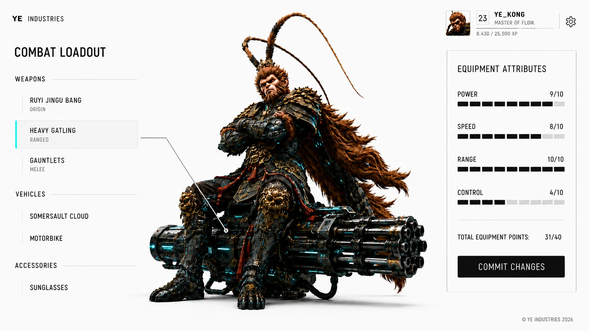
赛博悟空武器面板
开场菜单与加载界面是同一个白色界面的两个状态。连界面也在讲一致性。
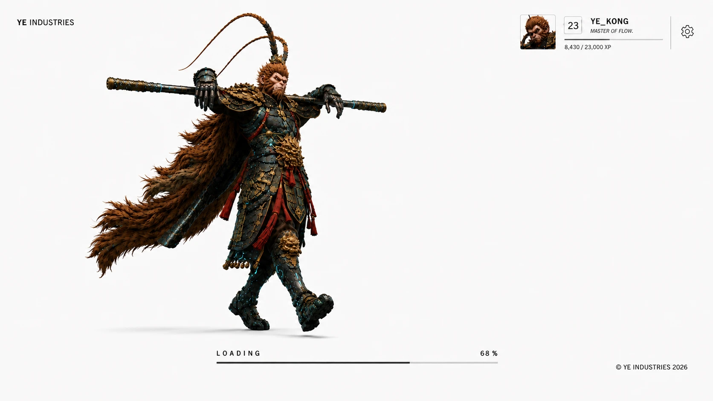
赛博悟空加载界面
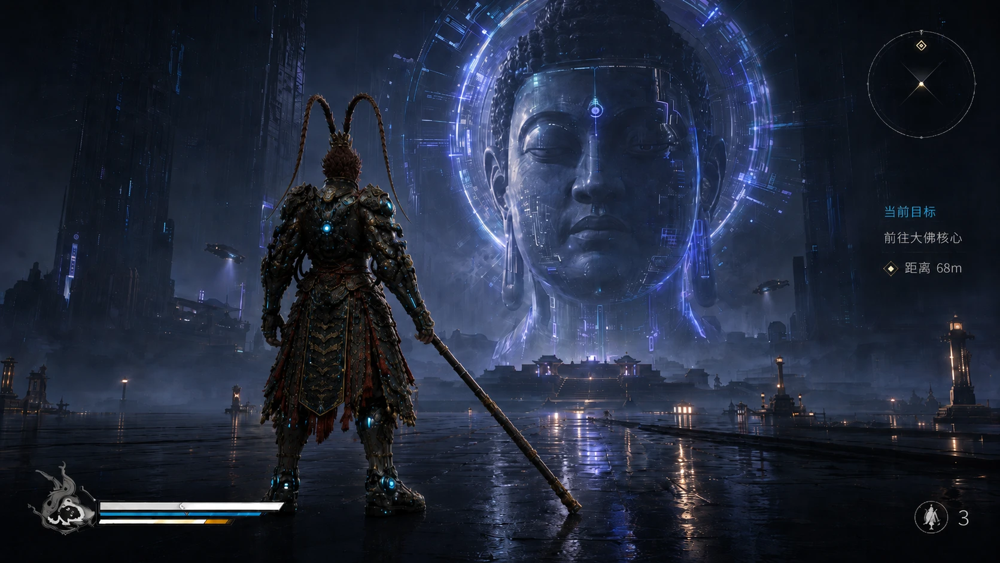
赛博悟空最终城市
一条提示词接起所有镜头
每段镜头都直接指向一张已经做好的参考图。
提示词节选。【@图片：X】的作用，是把这一段镜头绑定到对应参考图：
【0s–2s】·【@图片3 开场菜单】 平视镜头。悟空蹲伏在白色地面上，望向镜头；光标点击 CONTINUE。
【2s–5s】·【@图片4 武器A重型加特林】 菜单收拢，镜头推近。他摘下墨镜，耳中捏出小棍，层层展开重构成重型加特林。
【5s–8s】·【@图片5 武器B如意金箍棒】 镜头环绕到另一侧，加特林逆向坍缩成金箍棒，他起身摆出蓄势姿态。
【8s–11s】·【@图片6 加载界面】 点击 COMMIT，长棍横担双肩大步向前；LOADING 填到 100%，白色虚空变暗。
【11s–15s】·【@图片7 最终城市】 世界在四周成形：雨夜赛博朋克巨城，落定第三人称背影，HUD 淡入。
这条提示词有三个要点：
- 镜头绑定参考图：每段分镜用【图片：X】直接指图，不再重新描述画面长什么样。
- 角色设定只写一次：全片共用同一段角色描述、同一套参考图。
- 一次生成成片：15 秒一镜到底，直接得到成片，无需剪辑。
第三部分｜稳住场景：Ye café 案例
01｜三步串成片
先把空间做成固定参考，多镜头才不会各拍各的。
| 步骤 | 做什么 | 产出 |
|---|---|---|
| ① 出空间参考图 | 先确定场景的基础视角 | 正视图、俯视图 |
| ② 生成分镜图 | 用主视角图 + 俯视图生成九宫格，统一各机位 | 九宫格样板间分镜图 |
| ③ 串联成片 | @ 引用三张图作参考，配一段段写好的镜头脚本 | 一条多镜头视频 |
02｜Ye café 案例
案例总览
一支 15 秒的片子，9 个镜头走遍整家店。
- 成片：15 秒咖啡馆宣传片，9 个镜头硬切，一次生成。
- 场景：一家叫 Ye café 的咖啡馆，9 个镜头全部拍在同一家店里。
- 做法：镜头脚本按时间码写好，@ 三张空间参考图，一次生成整支片。
九个镜头依次是：外景街道、共享长桌、吧台、沙发、独处角落、商务包间、后区走廊、仓库、出口落版。
成片：《Ye café 宣传片》
定空间，统一机位
机位再多，参照的都是同一个空间。
第一步，先出正视图和俯视图，把空间定下来。
第二步，用一句提示词生成九宫格分镜：
图1是主视角，图2是俯视角，为我设计一套九宫格的样板间参观视频分镜图

YeCafe正视图
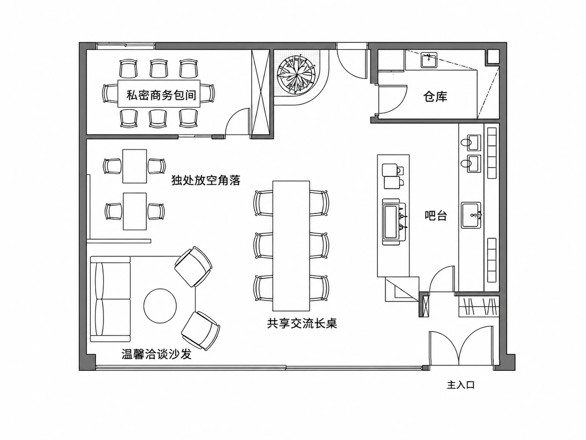
YeCafe俯视图
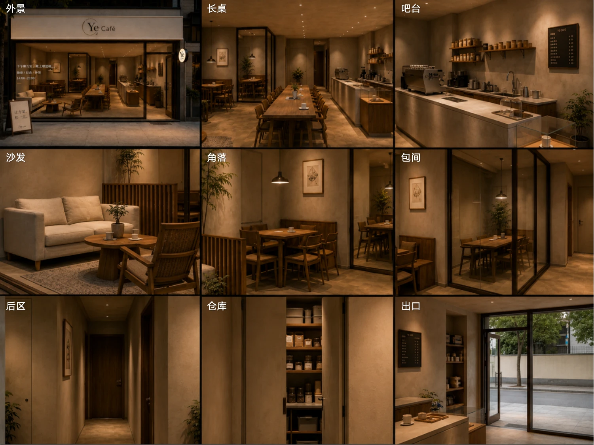
YeCafe九宫格分镜图
@ 三张图与脚本
脚本的作用，是把参考图排成一条能播的片子。
第三步，把 @九宫格、@俯视图、@正视图 作参考，配上按时间码写好的镜头脚本，整支片一次生成。
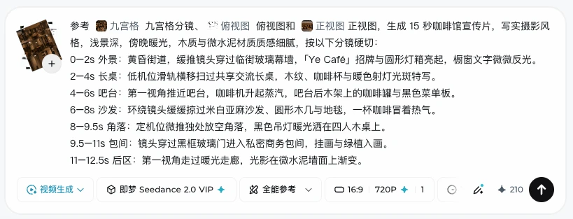
即梦Seedance2.0三张参考图与分镜脚本
03｜四条验收线
四条线一起对上，观众才会相信这是同一家店。
成片出来以后，沿四条线逐条对一遍，任何一条对不上，穿帮就出在那一处：
| 验收线 | 合格的样子 | 出问题的样子（示例） |
|---|---|---|
| 材质 | 木质与微水泥的质感，镜头之间没有突变 | 前一镜头是木地板，后一镜头变成亮面瓷砖 |
| 光线 | 傍晚暖光贯穿全片 | 外景是黄昏，进店后变成冷白日光 |
| 质感 | 浅景深写实摄影感统一 | 有的镜头像实拍，有的镜头像游戏渲染 |
| 位置关系 | 吧台、沙发、包间的空间关系不乱 | 换个机位，沙发跑到吧台另一边 |
四条线都由同一套空间参考图带住。对不上时，回头改参考图，比在提示词里补描述快得多。
小结
想要实现画面一致性，依靠的不是反复堆砌提示词，而是对参考素材的有效投喂。
- 一致性是提前准备出来的：功夫不在提示词上，在开拍前的那批素材上。
- 四类素材各锁一样：文字锁意图，图片锁外观，视频锁运动，音频锁节奏。
- 角色一致性：形象、三视图、动作、道具，全部基于同一张角色图长出来。
- 场景一致性：先出正视图和俯视图，再用九宫格统一机位，最后 @ 三张图加脚本一次生成。